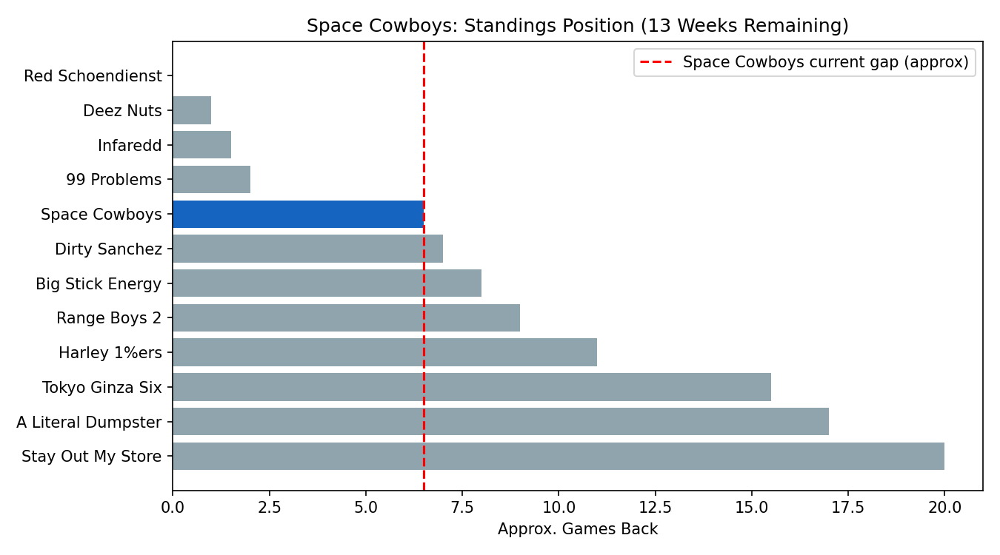
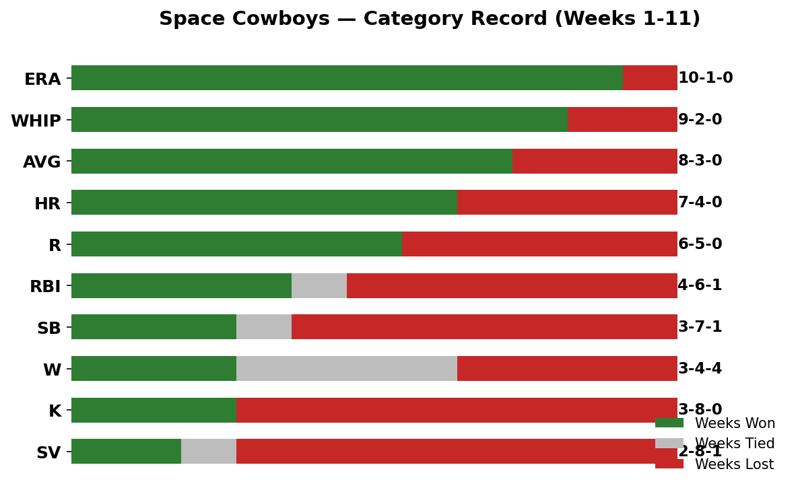
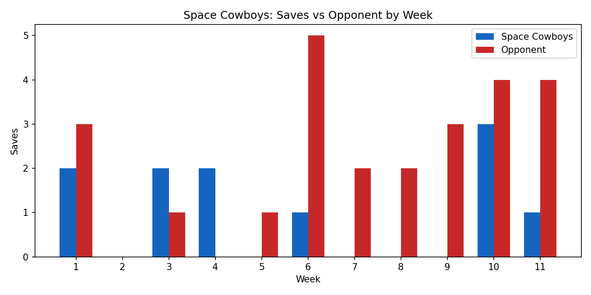

Week 12 Report
Standings & Playoff Outlook
Space Cowboys sit in 5th place at .533, in playoff position with the cutoff at 6th but with a tight pack behind — Big Stick Energy and Range Boys 2 are within a few games. The gap to 1st–4th is roughly 1–6.5 games, meaning movement in either direction is realistic over 13 remaining weeks.

Category Performance (Weeks 1–11)
Each bar shows your record in that category across the first 11 weeks — green is a week won, red is a week lost, gray is a tie. Categories are sorted from your strongest to weakest.

Strengths
- ERA (10-1-0) and WHIP (9-2-0) — by far your best categories, and the best ratios of any of your rosters.
- AVG (8-3-0) — your hitters consistently outproduce opponents in batting average.
- HR (7-4-0) and R (6-5-0) — solid secondary strengths.
Weaknesses
- Saves (2-8-1) — your single worst category, lost in 8 of 11 weeks. You currently have no consistent closer rostered (Helsley is on IL).
- Strikeouts (3-8-0) — surprising given your strong ERA/WHIP, this suggests your pitchers manage contact well but don’t rack up big K totals.
- Wins (3-4-4) — lots of ties/no-decisions, likely from streaming relief-heavy arms.
- RBI (4-6-1) and SB (3-7-1) — middling offensive production categories.
The Saves Problem — Deep Dive
This is the single most fixable, highest-leverage issue on your roster. The chart below shows saves for you versus your opponent each week. In 8 of 11 weeks you were shut out or badly outpaced in saves, while your opponents regularly post 2–5.

Roster Snapshot
| Pos | Player | Note |
|---|---|---|
| C | William Contreras | Strong, durable everyday catcher |
| 1B | Freddie Freeman | Steady star producer |
| 2B | Ernie Clement | High-average contact bat |
| 3B | Max Muncy | Streaky but capable power |
| SS | Jeremy Peña | Solid all-around floor |
| OF | Corbin Carroll | Elite 5-tool talent, your best player |
| OF | Ian Happ | Power source, some K risk |
| OF/3B | Jordan Lawlar | Hot in small sample, watch closely |
| Util | Josh Naylor | Reliable depth bat |
| Util | Taylor Ward | Streaky bench option |
| BN | Seiya Suzuki | Power upside, injury history |
| IL | Brent Rooker | Power bat sidelined |
| IL | Elly De La Cruz | Your best speed asset — high priority to activate |
| SP | Emerson Hancock | 2.74 ERA / 0.95 WHIP — elite, build around this |
| RP | Braxton Ashcraft | 3.30 ERA / 1.10 WHIP, 90 K — workhorse |
| BN | Ranger Suárez | 3.21 ERA / 1.17 WHIP, 70 K — underused asset |
| BN | Shota Imanaga | 4.44 ERA, 81 K — solid K source |
| IL | Ryan Helsley | Closer — critical to activate for SV fix |
Action Plan: Fix Saves Without Losing the Ratio Edge
Drop
- Casey Mize (IL, unclear timeline, low impact) if a roster crunch hits.
- One of your streaming SPs with low K and mediocre ERA (Walbert Ureña or Nolan McLean) — not producing enough W or K for the active spot.
Add (from waivers)
- Rico Garcia (BAL RP) — 4 SV, 1.26 ERA, 0.70 WHIP, only 33% rostered. Top priority — fixes SV while reinforcing ERA/WHIP.
- Dennis Santana (PIT RP) — 2 SV, 4.82 ERA — solid backup save source.
- Lucas Erceg (KC RP) — 12 SV but rough ratios (5.81/1.94) — higher risk, but your ERA/WHIP cushion can absorb it.
Trade
Your trade currency is elite ratio pitching depth (Suárez, Imanaga sitting unused). Target a team with a surplus closer and a need for ratio innings — offer one of these arms for a dedicated closer. Once Elly De La Cruz and Helsley return from IL, that alone could fix two of your three biggest weaknesses (SB and SV).
Bottom Line
Space Cowboys have the best pitching ratios of any of your rosters (ERA 10-1, WHIP 9-2) and a strong AVG/HR foundation — but are getting buried by saves (2-8-1) and strikeouts (3-8-0). Adding a save-generating reliever like Rico Garcia converts your worst category into a competitive one without sacrificing your biggest edge. Combined with De La Cruz and Helsley returning from IL, this roster has a clear path from 5th to a top-3 seed.